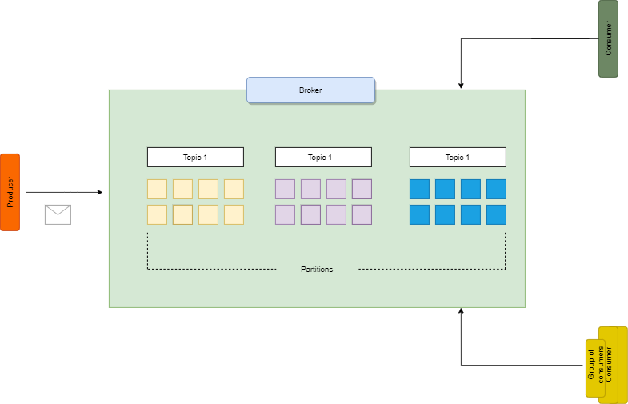
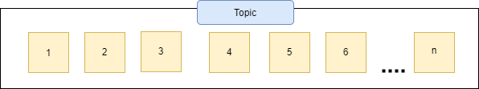
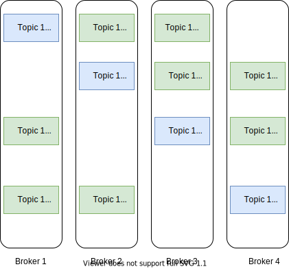
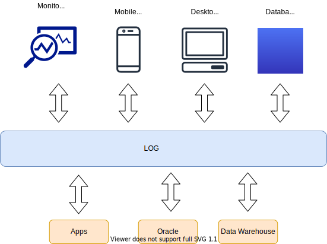
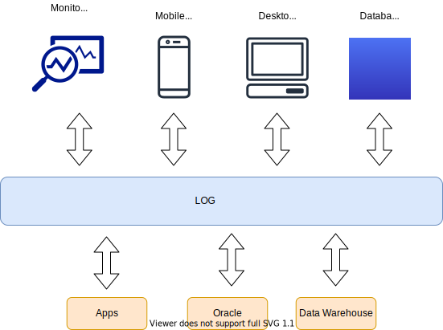
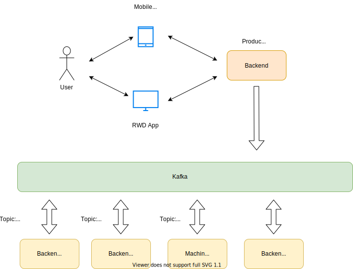

Jak dogadać Jave z Apache Kafka?
600 +
doradztwo w obszarze finansowym
międzynarodowe środowisko
Czym jest Event Driven Architecture?
Kiedy?
Duża ilość danych z różnych źródeł
Przetwarzanie w czasie rzeczywistym
Rożne podsystemy przetwarzają te same dane
Korzyści
Producenci i konsumenci zdarzeń są od siebie niezależni
Wysoka skalowalność i rozproszenie rozwiązań
Dobrowolne wybieranie technologii*
Czym jest Kafka?
Historia

Do czego Kafka?
Komunikacyjna szyna danych
ETL (Kafka Connect, Kafka Streams, CDC)
"Baza danych"
Kto używa kafki?


Podstawowe elementy Kafki - Zookeeper
Podstawowe elementy Kafki - Broker
Podstawowe elementy Kafki - Producer
-
Jest nim dowolna aplikacja springowa z klientem Kafki (i nie tylko)
-
Tworzy połączenie z brokerem
-
Wysyła dane na określony topic czy też partycje określony w brokerze lub clustrze brokerów
Podstawowe elementy Kafki - Consumer
-
Jest nim dowolna aplikacja springowa z klientem Kafki (i nie tylko)
-
Tworzy połączenie z brokerem
-
Odbiera dane z danego brokera lub clustra brokerów wysyłane na dany topic
-
Pilnuje go Zookeper (offset)
Podstawowe elementy Kafki - Topic
Podstawowe elementy Kafki - Topici i partycje
Retencja danych
 

log.retention.hours = 168
Wygenerowany schemat Avro
//WeatherForCities.avsc
{
"type": "record",
"name": "City",
"namespace": "com.spring.kafka.springkafka",
"fields": [
{
"name": "City",
"type": "string"
},
{
"name": "voivodeship",
"type": "string"
},
{
"name": "weatherDatas",
"type": {
"type": "array",
"items": {
"type": "record",
"name": "WeatherData",
"fields": [
{
"name": "temperature",
"type": "double"
},
{
"name": "pressure",
"type": "string"
},
{
"name": "isTornado",
"type": "boolean"
}
]
}
},
"default": []
}
]
}
Wygenerowana class Javowa
/**
* Autogenerated by Avro
*
* DO NOT EDIT DIRECTLY
*/
package com.spring.kafka.springkafka;
import org.apache.avro.specific.SpecificData;
@SuppressWarnings("all")
@org.apache.avro.specific.AvroGenerated
public class City extends org.apache.avro.specific.SpecificRecordBase implements org.apache.avro.specific.SpecificRecord {
private static final long serialVersionUID = 2083532558727406128L;
public static final org.apache.avro.Schema SCHEMA$ = new org.apache.avro.Schema.Parser().parse("{\"type\":\"record\",\"name\":\"City\",\"namespace\":\"com.spring.kafka.springkafka\",\"fields\":[{\"name\":\"City\",\"type\":{\"type\":\"string\",\"avro.java.string\":\"String\"}},{\"name\":\"voivodeship\",\"type\":{\"type\":\"string\",\"avro.java.string\":\"String\"}},{\"name\":\"weatherDatas\",\"type\":{\"type\":\"array\",\"items\":{\"type\":\"record\",\"name\":\"WeatherData\",\"fields\":[{\"name\":\"temperature\",\"type\":\"double\"},{\"name\":\"pressure\",\"type\":{\"type\":\"string\",\"avro.java.string\":\"String\"}},{\"name\":\"isTornado\",\"type\":\"boolean\"}]}},\"default\":[]}]}");
public static org.apache.avro.Schema getClassSchema() { return SCHEMA$; }
@Deprecated public java.lang.String City;
@Deprecated public java.lang.String voivodeship;
@Deprecated public java.util.List weatherDatas;
/**
* Default constructor. Note that this does not initialize fields
* to their default values from the schema. If that is desired then
* one should use newBuilder().
*/
public City() {}
/**
* All-args constructor.
* @param City The new value for City
* @param voivodeship The new value for voivodeship
* @param weatherDatas The new value for weatherDatas
*/
public City(java.lang.String City, java.lang.String voivodeship, java.util.List weatherDatas) {
this.City = City;
this.voivodeship = voivodeship;
this.weatherDatas = weatherDatas;
}
public org.apache.avro.Schema getSchema() { return SCHEMA$; }
// Used by DatumWriter. Applications should not call.
public java.lang.Object get(int field$) {
switch (field$) {
case 0: return City;
case 1: return voivodeship;
case 2: return weatherDatas;
default: throw new org.apache.avro.AvroRuntimeException("Bad index");
}
}
// Used by DatumReader. Applications should not call.
@SuppressWarnings(value="unchecked")
public void put(int field$, java.lang.Object value$) {
switch (field$) {
case 0: City = (java.lang.String)value$; break;
case 1: voivodeship = (java.lang.String)value$; break;
case 2: weatherDatas = (java.util.List)value$; break;
default: throw new org.apache.avro.AvroRuntimeException("Bad index");
}
}
/**
* Gets the value of the 'City' field.
* @return The value of the 'City' field.
*/
public java.lang.String getCity() {
return City;
}
/**
* Sets the value of the 'City' field.
* @param value the value to set.
*/
public void setCity(java.lang.String value) {
this.City = value;
}
/**
* Gets the value of the 'voivodeship' field.
* @return The value of the 'voivodeship' field.
*/
public java.lang.String getVoivodeship() {
return voivodeship;
}
/**
* Sets the value of the 'voivodeship' field.
* @param value the value to set.
*/
public void setVoivodeship(java.lang.String value) {
this.voivodeship = value;
}
/**
* Gets the value of the 'weatherDatas' field.
* @return The value of the 'weatherDatas' field.
*/
public java.util.List getWeatherDatas() {
return weatherDatas;
}
/**
* Sets the value of the 'weatherDatas' field.
* @param value the value to set.
*/
public void setWeatherDatas(java.util.List value) {
this.weatherDatas = value;
}
/**
* Creates a new City RecordBuilder.
* @return A new City RecordBuilder
*/
public static com.spring.kafka.springkafka.City.Builder newBuilder() {
return new com.spring.kafka.springkafka.City.Builder();
}
/**
* Creates a new City RecordBuilder by copying an existing Builder.
* @param other The existing builder to copy.
* @return A new City RecordBuilder
*/
public static com.spring.kafka.springkafka.City.Builder newBuilder(com.spring.kafka.springkafka.City.Builder other) {
return new com.spring.kafka.springkafka.City.Builder(other);
}
/**
* Creates a new City RecordBuilder by copying an existing City instance.
* @param other The existing instance to copy.
* @return A new City RecordBuilder
*/
public static com.spring.kafka.springkafka.City.Builder newBuilder(com.spring.kafka.springkafka.City other) {
return new com.spring.kafka.springkafka.City.Builder(other);
}
/**
* RecordBuilder for City instances.
*/
public static class Builder extends org.apache.avro.specific.SpecificRecordBuilderBase
implements org.apache.avro.data.RecordBuilder {
private java.lang.String City;
private java.lang.String voivodeship;
private java.util.List weatherDatas;
/** Creates a new Builder */
private Builder() {
super(SCHEMA$);
}
/**
* Creates a Builder by copying an existing Builder.
* @param other The existing Builder to copy.
*/
private Builder(com.spring.kafka.springkafka.City.Builder other) {
super(other);
if (isValidValue(fields()[0], other.City)) {
this.City = data().deepCopy(fields()[0].schema(), other.City);
fieldSetFlags()[0] = true;
}
if (isValidValue(fields()[1], other.voivodeship)) {
this.voivodeship = data().deepCopy(fields()[1].schema(), other.voivodeship);
fieldSetFlags()[1] = true;
}
if (isValidValue(fields()[2], other.weatherDatas)) {
this.weatherDatas = data().deepCopy(fields()[2].schema(), other.weatherDatas);
fieldSetFlags()[2] = true;
}
}
/**
* Creates a Builder by copying an existing City instance
* @param other The existing instance to copy.
*/
private Builder(com.spring.kafka.springkafka.City other) {
super(SCHEMA$);
if (isValidValue(fields()[0], other.City)) {
this.City = data().deepCopy(fields()[0].schema(), other.City);
fieldSetFlags()[0] = true;
}
if (isValidValue(fields()[1], other.voivodeship)) {
this.voivodeship = data().deepCopy(fields()[1].schema(), other.voivodeship);
fieldSetFlags()[1] = true;
}
if (isValidValue(fields()[2], other.weatherDatas)) {
this.weatherDatas = data().deepCopy(fields()[2].schema(), other.weatherDatas);
fieldSetFlags()[2] = true;
}
}
/**
* Gets the value of the 'City' field.
* @return The value.
*/
public java.lang.String getCity() {
return City;
}
/**
* Sets the value of the 'City' field.
* @param value The value of 'City'.
* @return This builder.
*/
public com.spring.kafka.springkafka.City.Builder setCity(java.lang.String value) {
validate(fields()[0], value);
this.City = value;
fieldSetFlags()[0] = true;
return this;
}
/**
* Checks whether the 'City' field has been set.
* @return True if the 'City' field has been set, false otherwise.
*/
public boolean hasCity() {
return fieldSetFlags()[0];
}
/**
* Clears the value of the 'City' field.
* @return This builder.
*/
public com.spring.kafka.springkafka.City.Builder clearCity() {
City = null;
fieldSetFlags()[0] = false;
return this;
}
/**
* Gets the value of the 'voivodeship' field.
* @return The value.
*/
public java.lang.String getVoivodeship() {
return voivodeship;
}
/**
* Sets the value of the 'voivodeship' field.
* @param value The value of 'voivodeship'.
* @return This builder.
*/
public com.spring.kafka.springkafka.City.Builder setVoivodeship(java.lang.String value) {
validate(fields()[1], value);
this.voivodeship = value;
fieldSetFlags()[1] = true;
return this;
}
/**
* Checks whether the 'voivodeship' field has been set.
* @return True if the 'voivodeship' field has been set, false otherwise.
*/
public boolean hasVoivodeship() {
return fieldSetFlags()[1];
}
/**
* Clears the value of the 'voivodeship' field.
* @return This builder.
*/
public com.spring.kafka.springkafka.City.Builder clearVoivodeship() {
voivodeship = null;
fieldSetFlags()[1] = false;
return this;
}
/**
* Gets the value of the 'weatherDatas' field.
* @return The value.
*/
public java.util.List getWeatherDatas() {
return weatherDatas;
}
/**
* Sets the value of the 'weatherDatas' field.
* @param value The value of 'weatherDatas'.
* @return This builder.
*/
public com.spring.kafka.springkafka.City.Builder setWeatherDatas(java.util.List value) {
validate(fields()[2], value);
this.weatherDatas = value;
fieldSetFlags()[2] = true;
return this;
}
/**
* Checks whether the 'weatherDatas' field has been set.
* @return True if the 'weatherDatas' field has been set, false otherwise.
*/
public boolean hasWeatherDatas() {
return fieldSetFlags()[2];
}
/**
* Clears the value of the 'weatherDatas' field.
* @return This builder.
*/
public com.spring.kafka.springkafka.City.Builder clearWeatherDatas() {
weatherDatas = null;
fieldSetFlags()[2] = false;
return this;
}
@Override
public City build() {
try {
City record = new City();
record.City = fieldSetFlags()[0] ? this.City : (java.lang.String) defaultValue(fields()[0]);
record.voivodeship = fieldSetFlags()[1] ? this.voivodeship : (java.lang.String) defaultValue(fields()[1]);
record.weatherDatas = fieldSetFlags()[2] ? this.weatherDatas : (java.util.List) defaultValue(fields()[2]);
return record;
} catch (Exception e) {
throw new org.apache.avro.AvroRuntimeException(e);
}
}
}
private static final org.apache.avro.io.DatumWriter
WRITER$ = new org.apache.avro.specific.SpecificDatumWriter(SCHEMA$);
@Override public void writeExternal(java.io.ObjectOutput out)
throws java.io.IOException {
WRITER$.write(this, SpecificData.getEncoder(out));
}
private static final org.apache.avro.io.DatumReader
READER$ = new org.apache.avro.specific.SpecificDatumReader(SCHEMA$);
@Override public void readExternal(java.io.ObjectInput in)
throws java.io.IOException {
READER$.read(this, SpecificData.getDecoder(in));
}
}
Przykładowa apka
-
Czym jest Kafka ?
https://www.cloudkarafka.com/blog/2016-11-30-part1-kafka-for-beginners-what-is-apache-kafka.html
-
Czym jest Zookeeper ?
https://www.cloudkarafka.com/blog/2018-07-04-cloudkarafka_what_is_zookeeper.html
-
Moje repo:
https://github.com/tzyGun/tech_3camp_training
-
Porównanie z podobnymi/innymi rozwiązaniami
https://medium.com/better-programming/rabbitmq-vs-kafka-1ef22a041793
-
Kiedy Kafka ? Porównanie z RabbitMq cechy itd.:
https://www.plukasiewicz.net/Artykuly/RabbitMQvsApacheKafka
-
Blog o Kafce w szczegółach:
https://jaceklaskowski.gitbooks.io/apache-kafka/
-
Topici i replici w szczegółach:
https://www.confluent.io/blog/hands-free-kafka-replication-a-lesson-in-operational-simplicity/
Dzięki za uwagę :)!
https://tzygun.github.io/docs/javacon_kafka